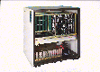
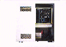
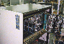
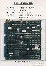

Photo Exhibition of PIM/k

Photo of a cabinet of pim/k (64KB)

Photo of a cabinet of pim/k (46KB)

Photo of a inside view of a cabinet of pim/k (55KB)

Photo of a processor board of pim/k (102KB)